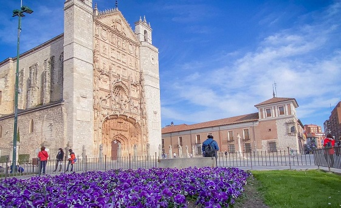
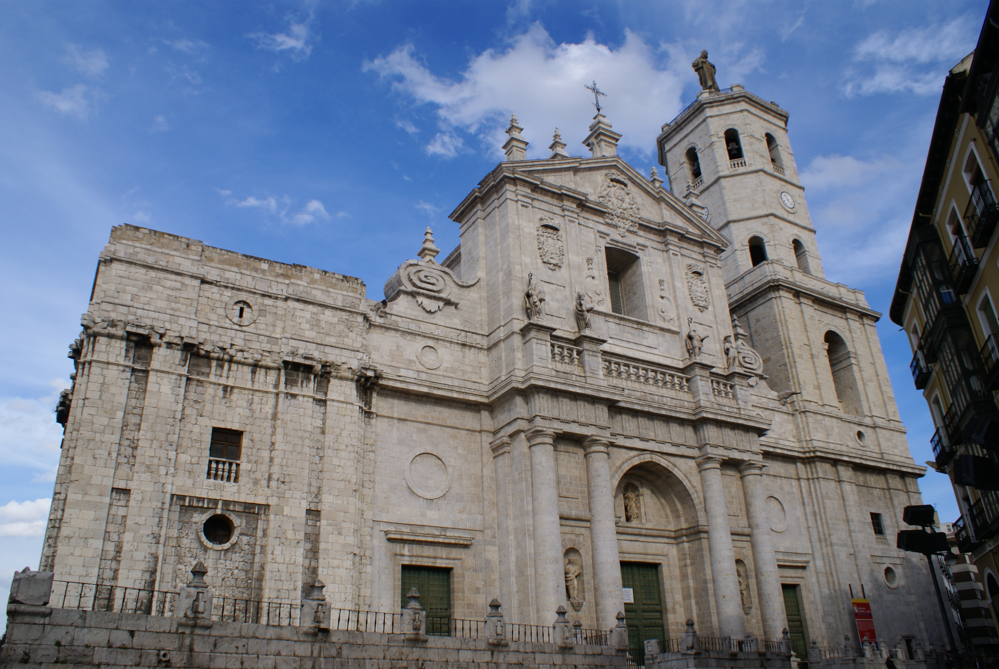
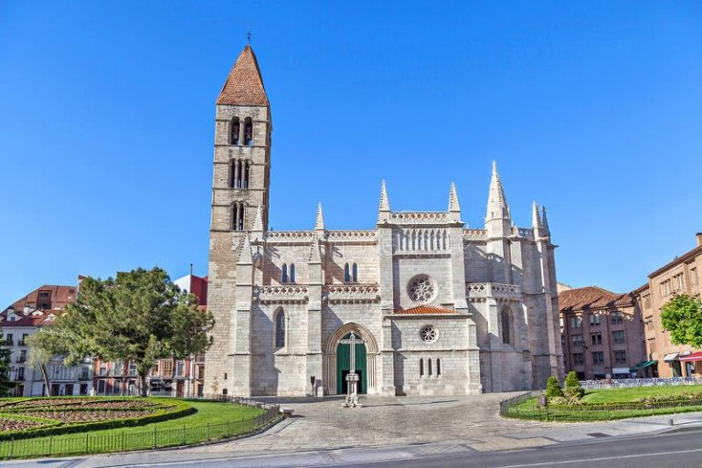

Iglesias de Valladolid
Valladolid es una ciudad con una gran riqueza histórica y artística, que se refleja en sus numerosas iglesias y conventos. Algunas de las más destacadas son:
- Iglesia de San Pablo: Es una de las obras maestras del gótico español, con una impresionante fachada plateresca y un retablo mayor de Juan de Juni. La iglesia conventual de San Pablo es uno de los edificios, más representativos de la ciudad de Valladolid (Castilla y León, España) y atracción turística. Se encuentra en la plaza de San Pablo, lugar donde se hallan también el palacio Real y el palacio de Pimentel, los llamados sitios reales en siglos pasados. Se encuentra adosada al colegio de San Gregorio y próxima al resto de sedes del Museo Nacional de Escultura. Fue construida entre 1445 y 1616 y pertenece a la orden de los dominicos.
En esta iglesia fueron bautizados los reyes Felipe IV y Felipe II y fue visitada por Napoleón.

- Catedral de Valladolid: La Santa Iglesia Catedral Metropolitana de Nuestra Señora de la Asunción es un templo católico inacabado ubicado en la ciudad de Valladolid, España, con categoría de catedral, sede de la Archidiócesis de Valladolid. Concebida en el siglo XVI y diseñada por el arquitecto Juan de Herrera, es un edificio de estilo herreriano con añadidos barrocos. Se encuentra construida en un 40-45 %, debido a la falta de recursos para un proyecto de tal magnitud y a los gastos provocados por la difícil cimentación del templo, situado en una zona con un gran desnivel en el terreno.
Obtuvo la categoría de catedral el año 1595, tras haber sido un templo colegial dependiente de la diócesis de Palencia en su segunda etapa como colegiata.
Está situada en el centro de la ciudad, en una zona ligeramente elevada, cerca de la iglesia de Santa María La Antigua y construida junto a la colegiata de Santa María, anterior iglesia colegial de Valladolid, algunos de cuyos espacios fueron destruidos para continuar con las nuevas obras.
- Iglesia de Santa María de la Antigua: La iglesia de Santa María de la Antigua se levanta desde al menos el siglo XII en la ciudad de Valladolid. Conserva de fines de esa centuria o principios de la siguiente una esbelta torre románica rematada con una flecha recubierta de teja, que la hace ser, con el de la iglesia de San Esteban (Segovia), el campanario románico más alto de España y la Península ibérica en la actualidad, y un pórtico en el lado norte también románico. El resto del edificio es gótico y neogótico, pues se levantó en el siglo xiv y, tras posteriores añadidos en diferentes estilos, fue intensamente restaurado y reconstruido en la primera mitad del siglo XX. 
Estas son solo algunas de las iglesias de Valladolid, pero hay muchas más que puedes descubrir en esta guía de viajes y turismo.